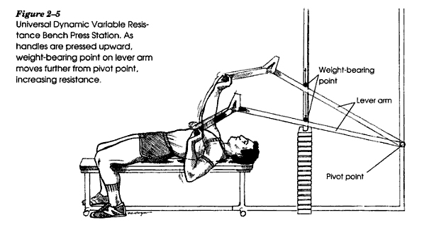
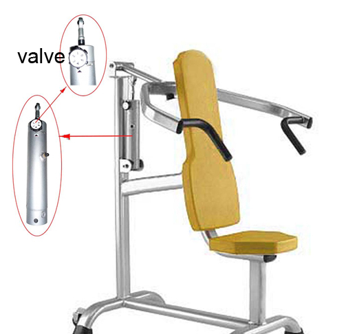
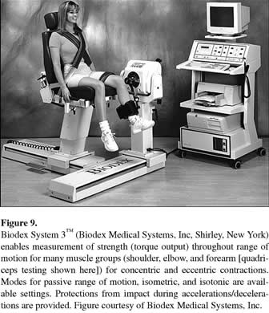

Biomechanics of Resistance Exercise
Resistance exercise has been used for many years as a method of increasing muscular size and strength in order to improve human capacity for work, sport and activities of daily living. In this lecture, we will look at the biomechanical aspects of this type of exercise and the design considerations of equipment used for these purposes.
Goals of Biomechanists Studying Resistance Exercise:
1) Reduction of injury
Most beneficial adaptations to muscular exercise require overloading the musculo-skeletal system. A balance needs to be achieved between stressing the system enough for beneficial adaptations and not stressing the system to the point of injury. Additionally, many of the methods involve handling heavy weights which is potentially dangerous and the reader is referred to the Occupational Biomechanics lecture for a more complete examination of the safety issues and matching the task to the physical capacity of the worker.
2) Maximizing benefits
Resistance exercise has been used to achieve many different benefits. These benefits include increasing the size and strength of the muscles but also stability of joints, range of motion or flexibility, coordination, power, fatigue resistance, etc.
Contraction types:
1) Isometric
Isometric contractions maintain a constant joint angle. The muscles actually shorten at the expense of series elasticity and these contractions require very little or no equipment.
2) Isotonic
Isotonic contractions are constant force contractions. In most cases, these contractions refer to lifting a weight of constant mass.
3) Concentric
Concentric contractions refer to the active shortening of a muscle but in most cases of resistance exercise, it refers to a change in joint angle in the direction of pull of the prime movers.
4) Eccentric
Eccentric contractions refer to the active lengthening of a muscle but in most cases of resistance exercise, it refers to a change in joint angle away from the direction of pull of the prime movers.
5) Plyometric
A stretch-shortening cycle exercise in which the load is allowed to increase dramatically in velocity before an active muscle decreases the velocity to zero with a lengthening contraction (active stretch) and remains active in a maximum effort to dramatically increase the velocity of the load in the opposite direction with a shortening contraction. Velocity and effort are important because otherwise, walking could be considered a plyometric exercise due to the active lengthening prior to active shortening. Drop jumping, or hard throwing of a medicine ball with a partner are good examples. The pros and cons of this type of exercise is described in greater detail in the "Neural Aspects" section below.
* It must be pointed out the contraction types above are classified on the basis of joint angular motion and not necessarily muscle length changes. From anatomy, we know that each joint is spanned by several muscles with different lines of action, leverage, sizes, moment arms, lengths, fiber pennation angles ,and series elasticities. Two joint muscles are also unique in the sense that they actually can be contracting isometrically while their single joint synergists are shortening or lengthening.
Resistance types:
1) Free Weights (isotonic)

In most cases, lifting a weight does not provide a constant load to the prime movers. In resistance exercise, the "iso" refers to a constant mass of the weight being lifted. In the diagram on the right(A), we can see that during this elbow flexion exercise (often called a curl), the weight has a moment arm of zero when the elbow is fully extended. As the lifter flexes the elbow joint, the moment arm increases, reaching a maximum at 90 degrees and then decreases until full flexion at 40 degrees. The starting position can be changed by supporting the arm (B) which increases the resistance at the beginning of the lift but decreases the resistance at the end.
Another important consideration of isotonic exercises is that different lifters can accelerate the load differently. The resistance is a combination of the gravitational load and the inertial load. If the lifter moves the weight very slowly, the accelerations are low and the resistance is almost entirely gravitational. However, if the lifter accelerates the load rapidly the initial resistance is considerably larger and then is reduced to less than the gravitational force as it decelerates near the top of the lift. This point is further explained below under the "acceleration of load" section.
2) Progressive Resistance and the Strength Curve:
Most weight lifters are aware that they can generate more force (move a greater weight) at certain joint angles than at others. In the Muscle Mechanics lecture we saw that muscle can generate more force at its optimum length and the moment arm or leverage changes with joint angle. The strength curve is the combination of the force-length relation of muscle and the leverage changes and yields the amount of force an individual can generate about a given joint over the movement range.

Muscles produce motion by exerting force and using leverage about joints. The moment of force or torque produced by the muscle is different than the force. The strength curve is the moment of force that muscles generate at the joint and are a combination of the force-length relation and moment arms of each synergistic muscle within the group. The figure on the right shows how the moment arms of various elbow flexor muscles change with joint angle in several subjects. There is a similar trend in each subject but the amount of leverage can be quite different. Since a lifter can generate more force at certain joint angles, the muscles are really only overloaded at the weakest joint angle in a constant resistance exercise such as lifting a constant weight.
For instance, anyone who has performed a "bench press" exercise knows that they are weakest at the low point and as they extend their elbows, the weight feels lighter and is easier to move. In order to get a muscle overload throughout the range of motion, kinesiologists have helped design machines that alter the resistance to better match the strength curve.
Elasticity
The use of elastic bands or other flexible material is one method of increasing the load on the muscles as the joint is moved through its range of motion.
Leverage

The diagram to the right shows a bench press exercise that has been modified to increase the resistance applied to the hands as the weight is lifted. In this case, 2nd class leverage is used to lift the weight and as the bar is moved upward, the point of weight application moves closer to the hands which increases the amount of force required to lift the weight.
This has a similar effect to elasticity and the resistance increases linearly as the load is moved. This does not follow the strength curve exactly but it does provide a greater overload to the muscles than isotonic exercises.
Cams

2) Accommodating Resistance and Isokinetics:
Machines designed to follow the strength curve using the above methods are good in principle but not every user has the same strength curve. Indeed, even for an individual lifter, the strength curve changes with fatigue, the speed of lifting and adapts over time. A cam that is ideal for one lifter may not be ideal for another lifter. The use of isokinetics solves that problem.
Hydraulic Cylinders

Replacing a weight stack with a hydraulic cylinder provides a different type of resistance. A Hydraulic cylinder has a piston that is moved through a cylinder filled with hydraulic fluid. Since the fluid cannot be compressed, it moves through a valve at a constant velocity. The greater the valve opening, the higher the velocity of the movement. Since the velocity is constant, the resistance is equal and opposite to the applied force by the user. Therefore, as the lifter moves through the range of movement and exerts greater force at the stronger points on the strength curve, the machine accommodates its resistance accordingly.
Pneumatic Cylinders
Pneumatic cylinders are similar to hydraulic cylinders but they are filled with air instead of hydraulic fluid. These cylinders are less expensive than hydraulics but the air is more compressible so the velocity is not exactly constant.

Electromechanical Motors
Popular in the therapeutic clinics are the uses of isokinetic dynomometers that are driven by electromechanical motors. Similar to hydraulic cylinders, these machines move at a constant velocity which means that they do not accelerate and, therefore, accommodate the resistance to the applied force by the user. These devices are quite expensive and generally have computer control and measurement of applied force.
Free Weights versus Machines:
Lifting free weights as a training stimulus has been used for many years but there has always been a safety issue of dropping heavy weights. Early machines attempted to solve the problem by isolating the weight stack away from the lifter using cables or levers. An added benefit of machines was the aspect of isolating the target muscle group of each exercise by designing exercise specific machines to eliminate the problem of improper technique. However, many of these exercises involved only a single segment and eliminated involvement of stabilizing muscles. These exercises violate the principal of exercise specificity (see Exercise Specificity ). Often strength gains achieved in the weight room are much greater than performance gains in the activity. The principle of exercise specificity requires the exercise to mimic the skill as closely as possible for the greatest transfer to occur. In this regard, free weights allow greater flexibility in exercise design that can involve multi-segment movements and stabilizing muscles similar to actual sport skills. Machines that use pulleys with friction or isokinetics have eccentric loads that are less than concentric or no eccentric loading at all. Free weights have an eccentric load that is the same as the concentric load and since muscle is stronger during lengthening this is a better overload situation. It should be pointed out that lifters who are only concerned with muscle size (body builders) are less concerned with specificity but acutely aware of the role of eccentric loading and fatigue to achieve maximum results. For this population, the use of free weights and a spotter is very effective.
Free weights and lifting style:
- acceleration of load

The figure above shows a 6 repetition lift of a 800N weight at two different frequencies. Lifting the weight slowly (left) took about 40 seconds to achieve the 6 repetitions. It can be seen that the required force exceeds 800N as the weight is decelerated in the downward direction and accelerated in the upward direction. Similarly, the forces are less than 800N as the weight is decelerated in the upward direction and accelerated in the downward direction. Lifting the weight quickly (right) shows much greater forces. Therefore, the resistance is dependent on the acceleration of the load and tasks that appear equal can be quite different.

-Super Slow sets and High Intensity Training
Many believe that the best results are achieved by lifting very heavy weights slowly and with very few repetitions. They argue that lifting weights quickly is a risk of injury and achieves lower results. They believe that lifting more weight not only provides greater strength but also faster movements. They use Newton's second law to show that an increase in force causes an increase in acceleration which is an increase in the rate of change of velocity. Therefore, stronger muscles allow greater speed and athletes do not have to lift faster to become faster. But is this really true?
Wrbaskic and Dowling (2006) measured isometric strength and elbow extension velocity of 32 subjects. The figure on the right shows the subjects ranked from strongest to weakest on the left side and fastest to slowest on the right. If the strongest athlete was the fastest, there would be a direct mapping yet the crossing lines show quite clearly that strongest is not necessarily the fastest.
Role of Fatigue:
Many believe that muscle is stimulated to become larger and stronger as a response to lifting a weight repeatedly until additional repetitions are impossible ("going to failure"). Fatigue is a great motivator and it is common to see higher values of EMG with fatigue than individuals can attain during a single maximum contraction. For this reason, many weight lifting programs use multiple sets and repetitions. It is also advised to lower the last repetition as slowly as possible to take advantage of the increased strength of the eccentric contraction and maximize the fatigue of the exercise.
Power Lifting, Olympic Lifting and the World's Strongest Man:
Ironically, "power lifting" is a test of strength, "Olympic lifting" is more dependent on power and the "world's strongest man competition uses measures that are also dependent on power.

Power lifting is measured by how much weight can be lifted in the squat, bench press and dead lift. There is no requirement to complete the lift in the shortest amount of time or to produce the maximum number of lifts in a given time. The strongest man wins.

The World's strongest man competition involves lifting very heavy weights but uses a time constraint. The winner performs the greatest amount of work in the required time, or produces the same work in the shortest time. As we know, the rate of doing work is a measure of power. there is certainly a high strength component but power is more important than it is in the "power lifting" competition.

Olympic lifting requires the greatest amount of power because the lifter must give the weight enough momentum to travel high enough to be caught on the shoulders(clean and jerk) or above the head (snatch). The figure on the right shows the lifter exerting forces that exceed the gravitational weight such that the weight accelerates to a high enough velocity by the second last frame to travel to the height of the last frame without any further force applied by the lifter. Between the last two frames, the weight is a projectile that allows the lifter the time and room to lower himself to the catch position.
Conclusion:
The role of each exercise should match the desired benefit. Each contraction type, machine and lifting strategy has pros and cons. The biomechanist should evaluate the match between the exercise and the desired benefit and make adjustments to ensure the best possible fit.